greetings and salutations it appears you have found my webbed site
i am the webmaster here, Robin Graves, though i do have more names, detailed to your right
i am a 19 year old nonhuman identifying werewolf aswell as being transspecies and a fictionkin. if you do not respect this i shall ask you to kindly leave my site.
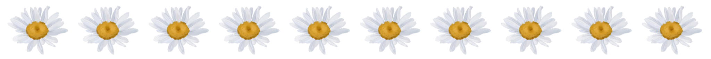
NAMES I GO BY Robin/Robbie (Graves) Zero (Zero) Mike/Mikey Allison Levi Xander Randall (Wheeler) other kin names are also fine :P
PRONOUNS I USE it/its/itself pup/pups/pupself fang/fangs/fangself bark/barks/barkself kit/kits/kitself bun/buns/bunself one/ones/oneself third person he/she lower priority, mostly for irl
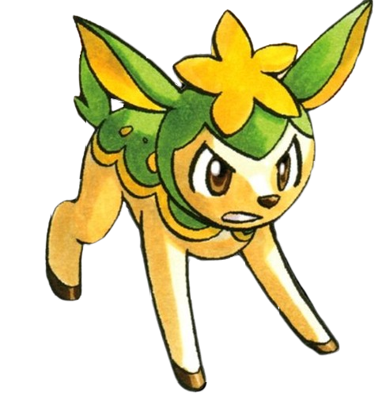
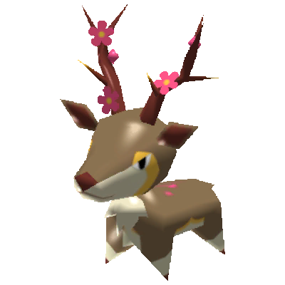
!! my kins !!
Hesitant Alien Hesitant Alien
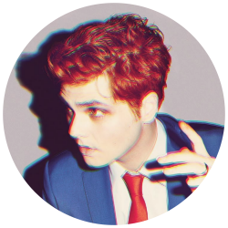
Young Neil Scott Pilgrim
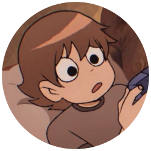
Allison Reynolds The Breakfast Club
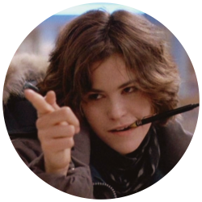
Richie Tozier IT 2017
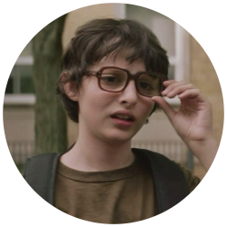
Bill S Preston Esq. Bill & Ted's Excellent Adventure
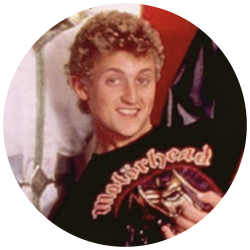
Mike Milligram The True Lives Of The Fabulous Killjoys: National Anthem
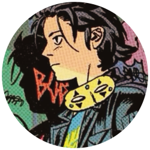
Kaylee Frye Firefly
Illi Mcmillin I'm Not Okay (I Promise)
Puppycorn UniKitty!
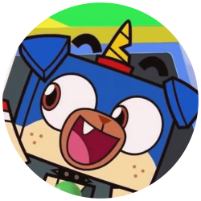
Heavy Shvagenbagen Metal Family
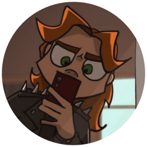
Voice Of The Paranoid Slay The Princess
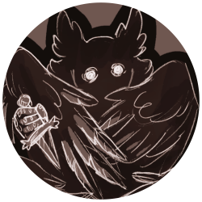
Stanley Barber I Am Not Okay With This
The Toy Soldier The Mechanisms
Ethan Morgan My Babysitter's A Vampire
Party Poison Danger Days: The True Lives Of The Fabulous Killjoys
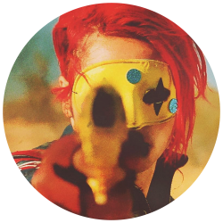
more on being a werewolf
i have never really been a human i used to lean towards the therian label but it never quite stuck i am aware that i exist in the guise of a human and that i must conduct myself as such in public but among those i trust i am not a human. and since this is the internet i ask that you do not interface with me like i am a human
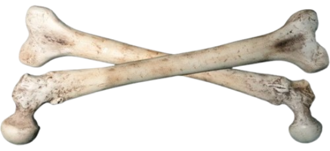
to frame it in a way that is more understandable. there are three parts of myself. the vessel i exist in, my human flesh and blood; my brain, which contains the human multitudes of myself (this is not to mention my alters, of whom i am unure where the would fall between mind and soul); and the me inside of me. that last bit is the part which is the wolf. it is trapped inside the human body that it inhabits. and it must make this life worth living. i think it is doing an alright job. it is happy currently - that is to say - i am happy.
MY FAVORITE MOVIES AND TV STUFF Zero Day Little Miss Sunshine Bill & Ted's Excellent Adventure It 2017 The Rocky Horror Picture Show Scott Pilgrim Vs. The World The Breakfast Club My Babysitter's a Vampire Ghostbusters Metal Family Scott Pilgrim Takes Off Firefly The Iconicles Buffy The Vampire Slayer Space Pirates My Babysitter's A Vampire Andy And The Band